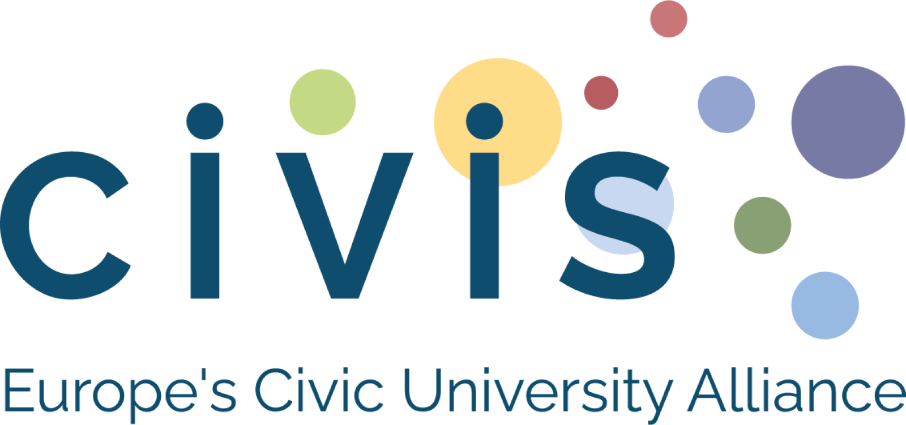
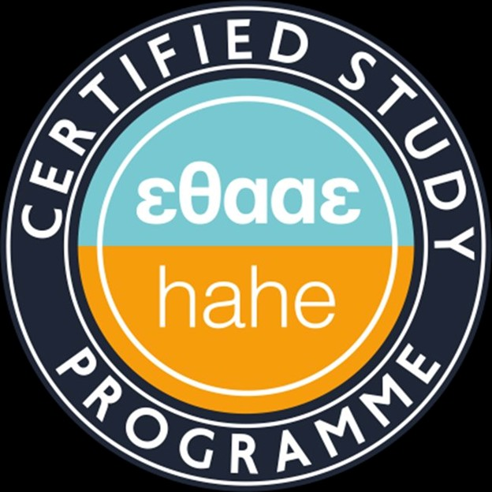

The programme is part of the joint CIVIS MA. You can spend a semester at a collaborating CIVIS European Universities Alliance partner and have those courses recognised toward your MA.
This rigorous, research-led MA sits at the intersection of translation science, digital humanities, and cognitive linguistics, and deliberately at the cutting edge of a world where artificial intelligence is transforming every aspect of language work.
We do not pretend that AI is irrelevant to translation. We train you to understand it, work with it, evaluate its limits, and, critically, to do the things it cannot: read irony, feel history, understand a civilization from the inside, and decide when not to translate.
"The Intelligence Turn is not a turn away from the human; it is a turn toward everything that is irreducibly human about language."
Taught entirely in English, with English / Greek as the primary working language pair, the programme combines advanced seminars in translation theory and methodology with practical courses in machine translation, audiovisual translation, diachronic corpus linguistics, and professional practice.
Selection is based on your portfolio (70%) and an oral interview (30%). We want to know how you think, not how quickly you can write.
All teaching, seminars and the MA dissertation are conducted in English. The primary translation language pair is English / Greek.
Part of the MA "English Language, Linguistics and Translation." The Translation Studies specialization runs every two years (2026–2028 cycle). Gov. Gazette 1501/B'/17.03.2026.
Selected courses, seminars, lectures and workshops are offered in hybrid or fully online format. The MA dissertation defence may be conducted online.
Translation here is studied from a linguistics perspective. Theoretical, methodological and analytical work draws on text linguistics, historical and contact linguistics, psycholinguistics, corpus methods and discourse analysis. Translators leave the programme with a deep, principled understanding of how language works, not only of how it is moved across languages.
Approximately two seminars per month are delivered by invited professors and senior researchers from leading international institutions. Visiting speakers contribute lectures, masterclasses and discussion sessions across the linguistics-translation continuum. Open to all MA students; attendance is integrated into the academic calendar.
Each semester offers 4 courses. You select 3 (10 ECTS each). The third semester is dedicated to your MA Dissertation.
An original, individually authored piece of research (15,000–20,000 words) in English. You propose a title and supervisor; the Steering Committee assigns a three-member examination committee. The dissertation is deposited in the NKUA digital repository PERGAMOS.
Alternative: with prior approval from the Steering Committee, students may replace the dissertation with three additional courses from the Department's MA pool (10 ECTS each). The list of approved third-semester electives for the 2026-2028 cycle is available in the Study Guide.
For the 2026–2028 cycle, the Steering Committee has replaced the traditional written exam with a portfolio-based evaluation and oral interview, a process that better reflects what translation actually requires: judgment, sensitivity, and intellectual depth.
Tuition fees: none. The MA Programme is offered free of tuition (Law 4957/2022).
One PDF only. All documents above must be combined into a single PDF and uploaded via the application form. For the reference letter, you forward the reference form to your referee, who submits it directly to us.
Applications are open from 2 May 2026 to 20 September 2026. The programme begins 12 October 2026.
Reference letter (for your referee only): open form
For enquiries: skarag@enl.uoa.gr · Tel. 210 7277771
Accessibility: applicants requiring accommodations during the oral interview should contact the Secretariat at skarag@enl.uoa.gr at least seven days before the interview.
The programme is taught by active researchers and connected to a wider research environment in linguistics and translation studies.
The MA is supported by the GlossaContact Lab (Lab of Translation, Interpreting, Diachronic and Synchronic Study of Language Contact) of the Department of English Language and Literature, which contributes seminars, corpus resources, and access to digital tools for linguistic and translation analysis.
Students may attend an annual international summer school in the Cyclades focused on diachronic linguistics, with priority registration for MA participants.
Faculty are active in major European linguistics networks, giving students exposure to international conferences and research collaborations across Europe.
The wider research environment of the MA includes nationally funded research projects in linguistics and translation, which feed into seminars and dissertation supervision.
An open-access academic journal in language contact and translation, edited within the wider research environment of the MA, provides students with a venue for engagement with current scholarship.
Through CIVIS European University Alliance and Erasmus+, students may spend a semester at partner institutions and have up to 30 ECTS recognised toward the MA.
Yes. Holders of equivalent degrees from recognised foreign universities are eligible.
Foreign degrees must be accepted by NKUA at the time of enrolment, in line with the procedure of the Ministry of Education. We accept applications based on the BA grade you hold; recognition is finalised before enrolment.
Interviews are typically online (Webex). Applicants based in Athens may request an in-person interview.
Selected sessions are hybrid or fully online; full-online enrolment is not currently offered.
Information on central NKUA scholarships is available on the University's scholarships page; programme-specific calls, when announced, are posted on this site.
Attendance is required; we recommend reduced professional commitment during semesters.
Each course is 10 ECTS, equivalent to about 250 hours of study including seminars, reading and assignments.
Each course is graded on the Greek 0-10 scale, with 5 as the pass mark.
All official materials for the MA in Translation Studies, available as direct downloads.

Accredited by the Hellenic Authority for Higher Education (HAHE / ΕΘΑΑΕ), Certified Study Programme. Verify on the HAHE site →